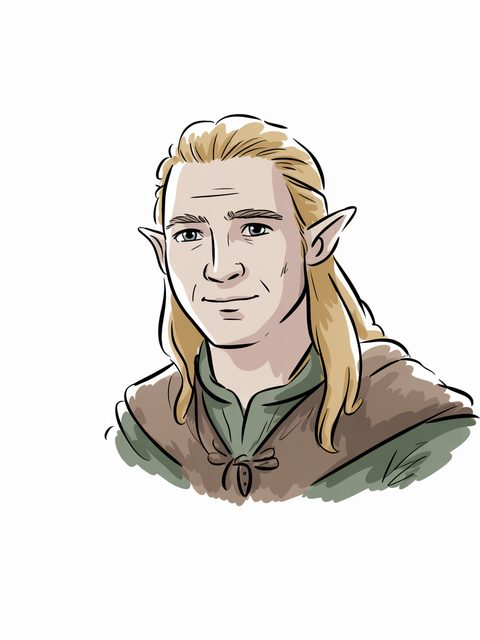

The Arda Archive · Volume III · Records of Persons
The Arda Archive · Legolasdcclxv
◌
Legolas
Sindar

Sindar
Of the house
Sindar of Woodland Realma
The dates as the archive holds them
T.A.–sails F.o.A. 120b
Style and office
Of the Fellowshipc
What the corpus says
“1 This description of the mallorn is much like that given by Legolas to his companions as they”e
“and Legolas had encountered Eomer and his company returning from battle”f
“Frodo); and as a unique exception Gimli the Dwarf, as friend of Legolas”g
“led by one Legolas Greenleaf) to page 190 (line II, leaving the main”h
“that in the final form the story of (Galdor) Legolas comes in much”i
“elf-kingdom in Northern Mirkwood, whence came Legolas. Lemberin [>”j
“Mirkwood, precursor of Legolas; Erestor, counsellor of Elrond; two”k
“Gimli the Dwarf, as friend of Legolas and ‘servant’ of Galadriel.”l
The name stands in 1,458 cited lines, in 98 of the corpus's 192 texts — most often in The Lord of the Rings (348), The Treason of Isengard (217), The War of the Ring (142).m
a The text — LotR [C]
b The text — [I-H]
c The archive's reading — [I-H]
d The ruling — the owner's ruling of 13 August 2026, on the 552 generated images: 'we are free to use them'. That settles the LICENCE and does not settle the HAND, which is recorded above as what it is. [C]
e The text — Unfinished Tales of Numenor and Middle Earth · l.5362[C]
f The text — The War of the Ring · l.174[C]
g The text — The Letters of J R R Tolkien Revised and Expanded Ed · l.11035[C]
h The text — The Book of Lost Tales Part Two · l.28[C]
i The text — The Treason of Isengard · l.5759[C]
j The text — The Peoples of Middle Earth · l.1596[C]
k The text — The Return of the Shadow · l.16775[C]
l The text — The Letters of J R R Tolkien · l.8515[C]
m Counted — site/arda_apparatus.json[C]
☞CR·vThe
A triskele boss — the archive's own hand
Volume III · Records of Personsdcclxvi
◌
The drafts against the published text
428 Cited lines stand in 8 volumes of the drafts and 409 in 9 of the published books — the record thinned as Tolkien revised.n
Named in the same lines as these places
Fangorn (13), Minas Tirith (13), Helm's Deep (10), Edoras (9).o
Two trees and the moons — the archive's own device, not a likeness
Named in the same lines as these realms
Rohan (25), The Woodland Realm (22), Fangorn (13), Gondor (10).p
A line the archive could not resolve
“Frodo, Aragorn and Merry. And Lególas. And Sam. Yours” — the name is near this line and the archive does not assert that it is this record.q
As the archive holds the line
of Sindar; in Woodland Realm; child of Thranduil; T.A.–sails F.o.A. 120.r
Named in the same lines
Gimli Elf-friend (386), Boromir (27), Boromir (27), Thranduil (20) — a shared line is a fact about the line, not a claim that the two met.s
counted from corpus lines that name BOTH records. A shared line is a fact about the line, not a claim that the two met; `eg` names a line a reader can open. [C]
By its name
Legolas is Danian.t
What was looked for and not found
a marginal hand recording a change to this record — searched over 59 verified notes in site/arda_hands.json, and nothing was found.u
What was looked for and not found
recorded by-names for this figure — searched over 47 worked sets in site/arda_epithets.json, and nothing was found.v
n Counted — site/arda_apparatus.json[C]
o Counted — site/arda_apparatus.json[C]
p Counted — site/arda_apparatus.json[C]
q The line — Mallorn 37 · l.2245[EXT]
r The table — LotR[C]
s Counted — site/arda_apparatus.json[C]
t The lexicon — https://eldamo.org/content/words/word-2544146507.html[EXT]
Part of the Arda Archive — a corpus-first index of Tolkien's legendarium; claims are cited or marked how far they are inferred, silences are declared, and the colophon prints how many claims carry neither.